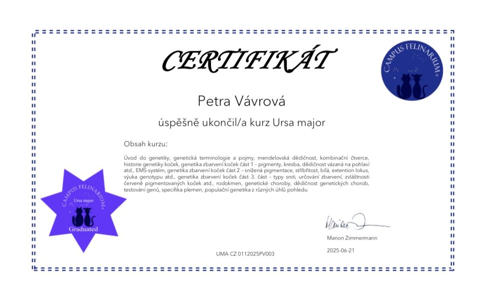

Nasza praca
Edukacja, testy zdrowotne i socjalizacja — trzy filary, na których opieramy całą hodowlę.

Edukacja
W 2025 roku ukończyłam kurs genetyki kotów w Campus Felinarium — siedmiotygodniowy program poświęcony genetyce, zdrowiu i odpowiedzialnej hodowli.
Testy zdrowotne
Wszystkie nasze koty hodowlane są testowane na HCM, PKD, FeLV i FIV. Wszystkie wyniki są negatywne.
Socjalizacja
Kocięta dorastają w naszym domu z dziećmi, są przyzwyczajone do rąk i całego domowego zgiełku.
Zdrowi rodzice, zrównoważone kocięta
Inwestycja w genetykę i socjalizację widoczna jest w każdym kocięciu, które odchodzi od nas do nowego domu.
HCM & PKD testy
Profilaktyka chorób serca i nerek u obojga rodziców przed każdym miotem.
FeLV & FIV testy
Wykluczenie chorób wirusowych dla bezpieczeństwa całej hodowli i nowych właścicieli.
Socjalizacja z dziećmi
Kocięta na co dzień spotykają dzieci, domowe dźwięki i gości — nic ich nie zaskoczy.